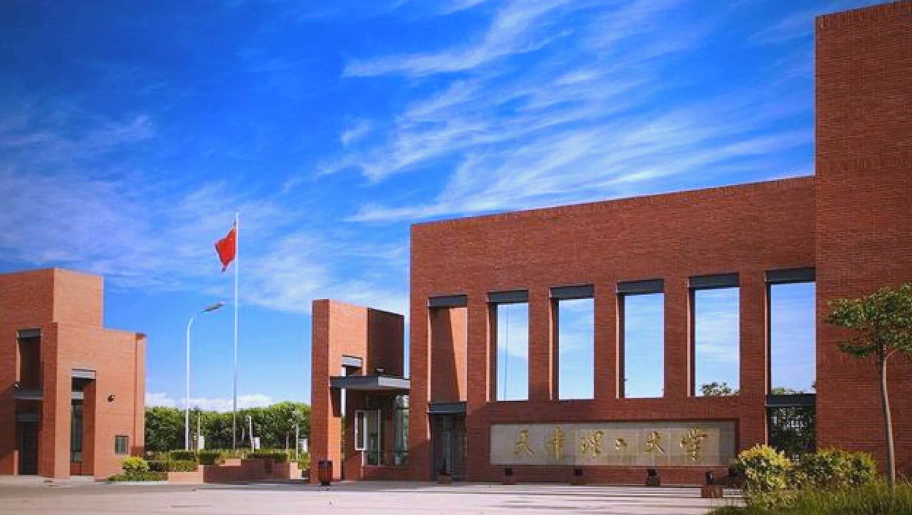
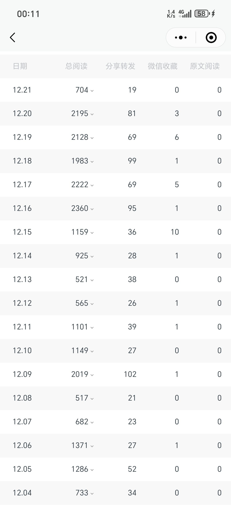
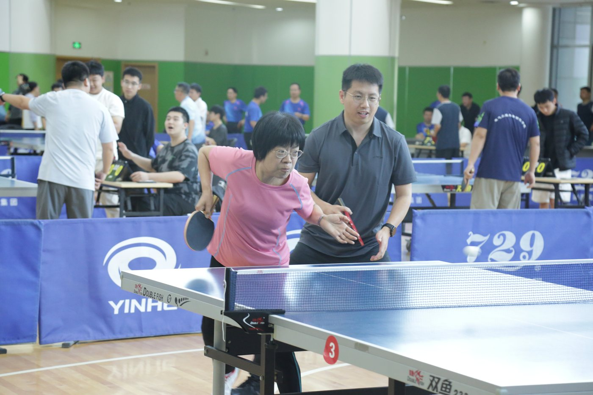

校园新媒体不是单纯发布通知，而是学院信息触达、青年表达和组织形象建设的连接点。内容需要同时兼顾准确、温度和传播效率。
NEW MEDIA OPERATION / CONTENT PLANNING / CAMPUS COMMUNICATION
校园新媒体
内容运营实践
以管理学院新媒体工作室为实践场景，围绕公众号、视频号、活动传播与影像记录，参与从选题策划、内容生产、视觉呈现到传播复盘的完整运营链路。
2023.09 - 2026.05账号运营内容策划活动传播数据复盘

围绕公众号推文、海报设计、摄影摄像、视频号内容和原创栏目，形成“选题—生产—审核—发布—复盘”的协同流程。
通过稳定内容生产和活动传播，让学院声音被更多学生看见，也让我训练到内容运营、团队协作和数据复盘的真实能力。
BACKGROUND / SECTION 01
做校园故事的内容连接者
管理学院新媒体工作室承担着学院对外展示和校园文化传播的窗口角色。它既要记录活动现场，也要把学院青年、专业学习、校园事件转化为可以被阅读、观看和分享的内容。
这个项目的核心不是“做几张图、发几篇推文”，而是在高频校园事务中建立稳定的内容生产秩序，让信息传播更清楚，也更有人情味。
OPERATING OUTCOME
从内容生产到传播触达
533
全年推文发布
33.4万+
年度总阅读量
14057
公众号粉丝量
SYSTEM / SECTION 02
四翼协同，新媒聚力
工作室以摄像纪实、视频创作、外媒运营和设计支撑形成协同结构。不同岗位并不是独立完成任务，而是在活动传播中共同推进内容从现场采集到最终发布。
摄像纪实
捕捉活动现场与人物状态，为图文和视频内容提供真实素材。
视频创作
围绕活动、栏目和学院故事完成拍摄、剪辑与视频号发布。
外媒运营
拓宽传播边界，通过公众号、视频号等平台扩大内容触达。
设计支撑
完成海报、排版和视觉衍生，强化学院内容的统一识别。
前端拍摄 → 中端创作 → 后端推广 → 视觉赋能
CONTENT / SECTION 03
以外媒的方式，传播管院声音
公众号运营是最稳定的内容阵地。过去一年中，团队围绕活动报道、通知发布、人物故事和学院品牌内容持续生产，形成了高频、稳定、可复盘的内容机制。



PRODUCTION / SECTION 04
创意为笔，帧帧留痕
视觉和影像生产为内容运营提供了可直接使用的素材能力。海报、排版、现场照片和视频素材不是孤立作品，而是活动传播链路中的关键资产。
45 项海报设计15 项排版设计11 项视觉衍生279 次拍摄任务127.52GB 照片素材多次摄像培训
CONTENT OPERATIONS / SECTION 05
内容运营案例
围绕校园场景完成选题策划、内容制作与传播运营的实践案例。
FEATURED CONTENT
精选内容案例
CONTENT WORKFLOW
内容生产流程
选题洞察↓脚本策划↓拍摄执行↓后期制作↓发布运营↓数据复盘
CONTENT IMPACT
内容影响
OPTIMIZATION / SECTION 06
从信息差，到流程协同
新媒体工作的难点常常不是“不会做内容”，而是信息差、分工不清和沟通滞后。复盘后，我更关注如何通过流程和协作保证内容质量。
内部建设
继续加强部员专业技能，组织团队建设，让成员理解内容标准和工作节奏。
外部沟通
与老师和其他中心保持信息互通，降低方向偏差和返工成本。
质量保证
通过清晰分工、积极沟通和节点管理，保证内容按时、准确、稳定发布。
PLAN / SECTION 07
让内容持续生长
后续规划聚焦原创系列、青年表达和粉丝增长。原创视频与原创推文计划继续上线，通过视频号、公众号等阵地带动青年用户关注，让学院内容有更稳定的识别度。
原创系列内容管院微课普视频号粉丝增长青年声音表达
NEXT STEP
把经验沉淀成可复用流程
01
建立选题库与内容日历
02
形成活动传播 SOP
03
用阅读、播放、互动数据持续复盘
ROLE / SECTION 08
我在项目中负责什么
我在新媒体工作室中参与内容统筹、活动记录、推文制作、视频内容和团队协作推进，重点训练的是把校园现场转化为稳定内容产出的运营能力。
选题策划
围绕学院活动、人物故事和青年表达梳理内容方向。
内容生产
参与推文排版、视觉物料、视频号内容与活动传播素材整理。
现场记录
参与拍摄记录和素材管理，让活动内容有可复用的视觉资产。
团队协同
推动成员分工、节点沟通与内容审核，减少信息差带来的偏差。
数据复盘
关注阅读、播放、粉丝增长等反馈，用数据判断内容传播效果。
REVIEW / SECTION 09
项目复盘
这段经历让我意识到，内容运营不是单次内容的“好看”，而是长期稳定地把真实场景转化为有价值的信息表达。对于运营岗位而言，我训练到的是从用户场景、内容生产到传播反馈的完整意识。
继续优化方向
- 建立更清晰的选题库与内容日历。
- 把阅读量、完播率、转发量等指标纳入常规复盘。
- 提升不同平台的差异化表达，如公众号、视频号、小红书。
- 沉淀活动传播 SOP，减少临时协作中的信息差。
让校园内容被看见，也让组织声音更有温度。